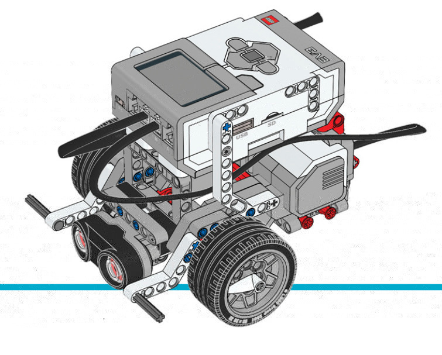

Robot Educator¶
This example makes the Robot Educator (Figure 16) drive until it sees an obstacle. It then backs up, turns around, and starts driving again.
You can find building instructions for the Robot Educator on the LEGO Education website.

{kind=link}
Figure 16 Robot Educator with the Ultrasonic Sensor
#!/usr/bin/env pybricks-micropython
from pybricks import ev3brick as brick
from pybricks.ev3devices import Motor, UltrasonicSensor
from pybricks.parameters import Port
from pybricks.tools import wait
from pybricks.robotics import DriveBase
# Play a sound.
brick.sound.beep()
# Initialize the Ultrasonic Sensor. It is used to detect
# obstacles as the robot drives around.
obstacle_sensor = UltrasonicSensor(Port.S4)
# Initialize two motors with default settings on Port B and Port C.
# These will be the left and right motors of the drive base.
left_motor = Motor(Port.B)
right_motor = Motor(Port.C)
# The wheel diameter of the Robot Educator is 56 millimeters.
wheel_diameter = 56
# The axle track is the distance between the centers of each of the wheels.
# For the Robot Educator this is 114 millimeters.
axle_track = 114
# The DriveBase is composed of two motors, with a wheel on each motor.
# The wheel_diameter and axle_track values are used to make the motors
# move at the correct speed when you give a motor command.
robot = DriveBase(left_motor, right_motor, wheel_diameter, axle_track)
# The following loop makes the robot drive forward until it detects an
# obstacle. Then it backs up and turns around. It keeps on doing this
# until you stop the program.
while True:
# Begin driving forward at 200 millimeters per second.
robot.drive(200, 0)
# Wait until an obstacle is detected. This is done by repeatedly
# doing nothing (waiting for 10 milliseconds) while the measured
# distance is still greater than 300 mm.
while obstacle_sensor.distance() > 300:
wait(10)
# Drive backward at 100 millimeters per second. Keep going for 2 seconds.
robot.drive_time(-100, 0, 2000)
# Turn around at 60 degrees per second, around the midpoint between
# the wheels. Keep going for 2 seconds.
robot.drive_time(0, 60, 2000)